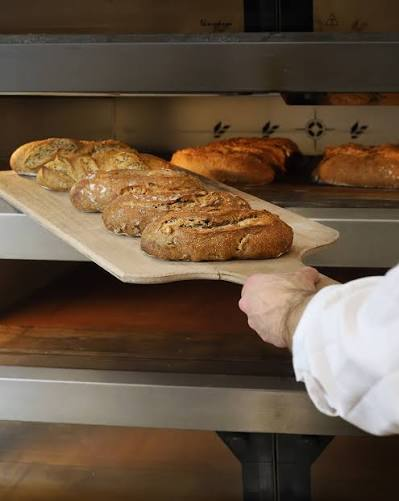

Le bon pain retrouve son histoire
Façonnés à la main et cuits chaque matin, nos pains au levain naturel révèlent les saveurs authentiques de nos terroirs. Redécouvrez le vrai goût de la nature.

Pourquoi choisir Le Pain Doré ?
Nous croyons en une alimentation vivante, respectueuse de votre bien-être et de la terre.
Farines Bio & Locales
Nos céréales anciennes proviennent exclusivement de fermes locales engagées en agriculture biologique.
Levain Naturel
Une fermentation lente de 24 heures pour un pain plus digeste, plus nutritif et qui se conserve plus longtemps.
Bon pour la Santé
Zéro additif, moins de gluten et un index glycémique bas pour prendre soin de votre corps au quotidien.
Ce qu'en disent nos clients
"Enfin du vrai pain qui se garde plusieurs jours ! La miche au levain naturel est une pure merveille. Ma digestion s'est nettement améliorée depuis que j'achète ici."
Marie L. — Habitante du quartier
"Le système de réservation en ligne est ultra pratique. Je passe récupérer ma miche de seigle après le travail, elle m'attend toute chaude sur le comptoir !"
Thomas D. — Client fidèle